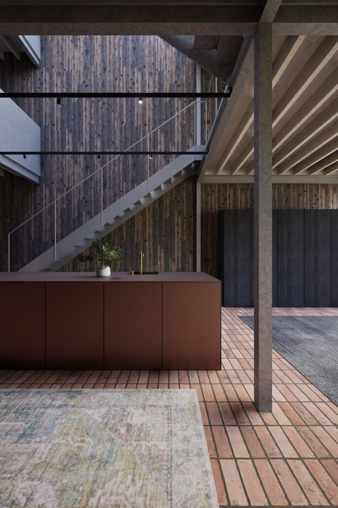

About the project
This terraced house arrived as a shell, without a fixed layout. The family who would live there did not want a standard everyday solution for kitchen, dining and living, and that called for rethinking the vertical circulation within the narrow volume.
A void above the kitchen lifts the ceiling open and makes that one spot the heart of the house, an almost theatrical moment in the middle of daily life. At the same time the void works as a division: kitchen and living read as two rooms, without a wall being needed.
Steel structure and a circular timber ribbed ceiling remain visible as the carrier of the whole, with terracotta tiles running beneath as one continuous ground.




About the materials
The floor is one continuous grid of hand-formed terracotta tile, the colour of dry earth, materially connecting kitchen, lounge and hallway. Walls are clad in dark, vertically placed wood: charred to a deep brown, with a grain that stays palpable under the hand. The staircase is steel, unconcealed and structurally honest. The circular timber ribbed ceiling shows the structure of the house without casing, carried by the steel frame that stands openly in the space.
Dark timber boards, placed vertically, do two things at once: they set the atmosphere and break the sound in the large, open space. Terracotta tiles run as flooring through kitchen, living and hallway, connecting the rooms materially.
Against that dark wood and earthen tile stands the kitchen island in matte copper, warm and precisely balanced, chosen to grow more beautiful with use. Every material here is natural and deliberately chosen, nothing is accidental.
A space of your own in mind?